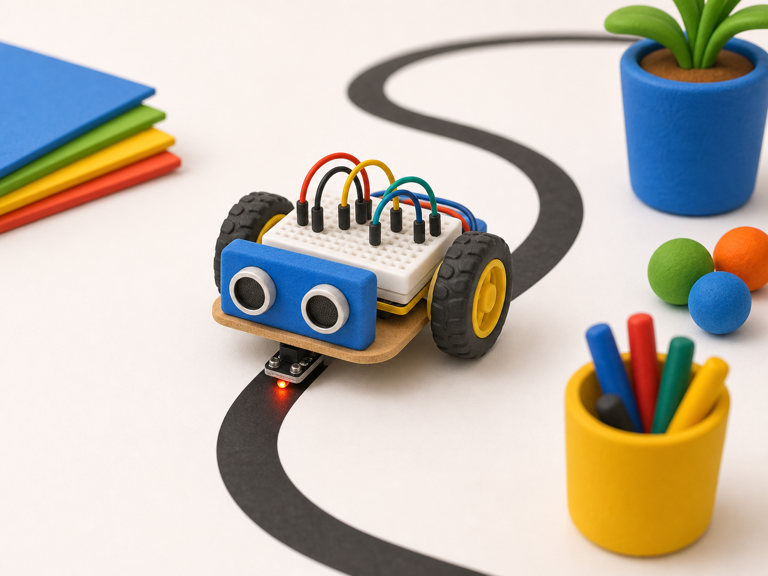
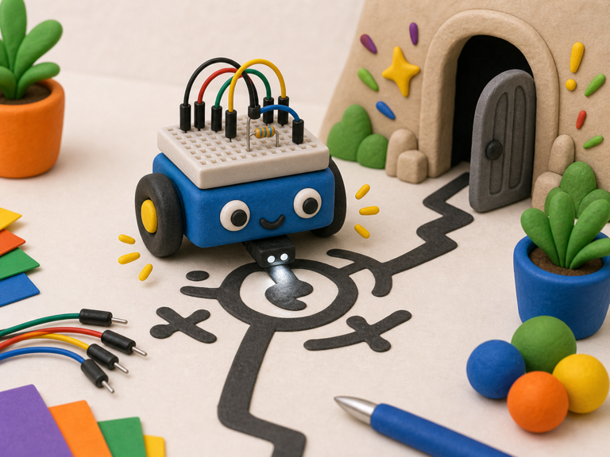

Line-following robot
DetectRead line or floor
DecideWhich way to steer
DoAdjust the motors
A line sensor tells light and dark surfaces apart underneath a moving project.
An infrared LED shines at the floor and a detector measures how much light bounces back.
Adjust the small potentiometer until its digital output changes reliably at the line edge.


from gpiozero import LineSensor
line = LineSensor(16)
on_line = line.is_activefrom picozero import DigitalInputDevice
line = DigitalInputDevice(22, pull_up=False)
on_line = line.is_active